搭建企业级 DevOps 平台
1、环境准备
| 主机名 | 主机IP | 描述 | 操作系统 | 内核版本 | 机器配置 |
|---|---|---|---|---|---|
| gitlab-31-24 | 192.168.31.24 | 使用docker部署gitlab | Rocky Linux 9.0 (Blue Onyx) | Linux 5.14.0-70.13.1.el9_0.x86_64 | 8C 8G 100G |
| Jenkins-31-171 | 192.168.31.171 | 使用docker部署jenkins | Rocky Linux 9.0 (Blue Onyx) | Linux 5.14.0-70.13.1.el9_0.x86_64 | 4C 4G 100G |
| k8s-31-54 | 192.168.31.54 | 使用kubeadm部署k8s单节点集群 | Rocky Linux 9.0 (Blue Onyx) | Linux 5.14.0-70.13.1.el9_0.x86_64 | 4C 4G 100G |
前置条件
关闭防火墙和selinux
systemctl disable firewalld.service --now
sed -i 's@SELINUX=enabled@SELINUX=disabled@g' /etc/selinux/config
# 重启生效所以临时设置为宽容模式
setenforce 0
reboot
因为虚拟机采用的网络模式是桥接，为了防止IP自动分配，请手动设置IP地址。三台同样配置
# Rocky 操作系统使用NetworkManager管理网卡，编辑网卡文件
vim /etc/NetworkManager/system-connections/ens33.nmconnection
[connection]
id=ens33
uuid=22b59732-7826-371f-8b8d-f20c5d47bcce
type=ethernet
autoconnect-priority=-999
interface-name=ens33
timestamp=1755509104
[ethernet]
[ipv4]
method=manual # auto改为 manual，注意后面不能有空格
address=192.168.31.54/24,192.168.31.1 # IP地址/子网掩码,网关，注意后面不能有空格
dns=8.8.8.8 # DNS服务器，注意后面不能有空格
[ipv6]
addr-gen-mode=eui64
method=auto
[proxy]
# 保存退出，并重启网卡
nmcli connection reload && nmcli connection down ens33 && nmcli connection up ens33
部署目录
/usr/local/
软件版本
| 组件 | 推荐版本 | 说明 |
|---|---|---|
| GitLab CE | 17.5.0-ce.0 |
你已经拉取的版本，当前 LTS，支持新功能和安全补丁。 |
| Jenkins | 2.462.3 LTS |
Jenkins 官方 LTS 稳定分支，推荐企业用 LTS，而不是 weekly。 |
| Harbor | 2.11.0 |
最新稳定版，支持 OCI Artifact、Trivy 安全扫描，兼容 Docker 20+ 和 K8s 1.32。 |
| SonarQube | 10.6.0 LTS |
长期支持版本，兼容 JDK 17+，适合和 Jenkins Pipeline 集成。 |
| Maven | 3.8.9 |
最新稳定版（不是 3.8.5，官方已更新到 3.8.8），修复了 3.8.5 的部分依赖解析问题。 |
| OpenJDK | 17 (LTS) |
建议使用 JDK 17（目前的 LTS，支持到 2029），Maven 3.8.x、Jenkins、SonarQube 都兼容；不建议 JDK 21（太新，部分插件未完全适配）。 |
| Kubernetes | 1.32.8 |
你已安装，属最新稳定分支。 |
| Docker CE | 28.3.3 |
你已安装，OK。 |
| docker-compose | v2.27.0 |
你已安装，OK。 |
2、安装Docker
配置YUM源
- 配置yum源
（1）确认文件是否存在且可读
sudo cat /etc/yum.repos.d/rocky.repo
如果文件不存在或内容为空，重新创建它。
（2）重新下载正确的阿里云源文件
sudo rm -f /etc/yum.repos.d/rocky.repo # 删除旧文件（如果有）
sudo curl -o /etc/yum.repos.d/rocky.repo https://mirrors.aliyun.com/rockylinux/rocky.repo?repo=rocky-9
（3）手动编辑文件（如果下载失败）
sudo vi /etc/yum.repos.d/rocky.repo
粘贴以下内容（阿里云 Rocky Linux 9 镜像源）：
[baseos]
name=Rocky Linux $releasever - BaseOS - Aliyun
baseurl=https://mirrors.aliyun.com/rockylinux/$releasever/BaseOS/$basearch/os/
gpgcheck=1
enabled=1
gpgkey=file:///etc/pki/rpm-gpg/RPM-GPG-KEY-rockyofficial
[appstream]
name=Rocky Linux $releasever - AppStream - Aliyun
baseurl=https://mirrors.aliyun.com/rockylinux/$releasever/AppStream/$basearch/os/
gpgcheck=1
enabled=1
gpgkey=file:///etc/pki/rpm-gpg/RPM-GPG-KEY-rockyofficial
[extras]
name=Rocky Linux $releasever - Extras - Aliyun
baseurl=https://mirrors.aliyun.com/rockylinux/$releasever/extras/$basearch/os/
gpgcheck=1
enabled=1
gpgkey=file:///etc/pki/rpm-gpg/RPM-GPG-KEY-rockyofficial
（4）也可以直接替换yum源里的地址
sed -e 's|^mirrorlist=|#mirrorlist=|g' \
-e 's|^#baseurl=http://dl.rockylinux.org/$contentdir|baseurl=https://mirrors.aliyun.com/rockylinux|g' \
-i.bak \
/etc/yum.repos.d/rocky*.repo
- 强制替换变量为 Rocky Linux 9 确保 $releasever 和 $basearch 被正确解析：
sudo sed -i 's/$releasever/9/g' /etc/yum.repos.d/rocky.repo
sudo sed -i 's/$basearch/x86_64/g' /etc/yum.repos.d/rocky.repo # 如果是 x86_64 架构
- 导入 GPG 密钥
bash
sudo rpm --import https://mirrors.aliyun.com/rockylinux/RPM-GPG-KEY-rockyofficial
-
检查文件权限和格式 （1）确保文件权限正确
bash sudo chmod 644 /etc/yum.repos.d/rocky.repo
（2）检查文件格式（避免 UTF-8 BOM 或 Windows 换行符）
```bash
sudo dos2unix /etc/yum.repos.d/rocky.repo # 如果是从 Windows 复制的文件
```
清除缓存并重新加载
bash
sudo dnf clean all
sudo dnf makecache
- 验证仓库是否启用
bash
sudo dnf repolist
正常输出应类似：
text
repo id repo name
baseos Rocky Linux 9 - BaseOS - Aliyun
appstream Rocky Linux 9 - AppStream - Aliyun
extras Rocky Linux 9 - Extras - Aliyun
在 Rocky Linux 9 中启用并安装 EPEL Repo。
dnf install epel-release
备份(如有配置其他epel源)并替换为国内镜像 注意最后这个库，阿里云没有对应的镜像，不要修改它，如果误改恢复原版源即可
cp /etc/yum.repos.d/epel.repo /etc/yum.repos.d/epel.repo.backup
cp /etc/yum.repos.d/epel-testing.repo /etc/yum.repos.d/epel-testing.repo.backup
cp /etc/yum.repos.d/epel-cisco-openh264.repo /etc/yum.repos.d/epel-cisco-openh264.repo.backup
将 repo 配置中的地址替换为阿里云镜像站地址
执行下面语句，它会替换epel.repo、eple-testing.repo中的网址，不会修改epel-cisco-openh264.repo，可以正常使用。
sed -e 's!^metalink=!#metalink=!g' \
-e 's!^#baseurl=!baseurl=!g' \
-e 's!https\?://download\.fedoraproject\.org/pub/epel!https://mirrors.aliyun.com/epel!g' \
-e 's!https\?://download\.example/pub/epel!https://mirrors.aliyun.com/epel!g' \
-i /etc/yum.repos.d/epel{,-testing}.repo
更新仓库缓存
dnf clean all
dnf makecache ---生成缓存，安装软件更快
查看docker版本
# Step 1: 安装依赖
yum install -y yum-utils device-mapper-persistent-data lvm2
# Step 2: 添加软件源信息
yum-config-manager --add-repo https://mirrors.aliyun.com/docker-ce/linux/rhel/docker-ce.repo
# Step 3: 安装Docker-CE，查询安装的版本
dnf list docker-ce --showduplicates | sort -r
docker-ce.x86_64 3:28.3.3-1.el9 docker-ce-stable
docker-ce.x86_64 3:28.3.2-1.el9 docker-ce-stable
docker-ce.x86_64 3:28.3.1-1.el9 docker-ce-stable
docker-ce.x86_64 3:28.3.0-1.el9 docker-ce-stable
# dnf install docker-ce-<VERSION_STRING> docker-ce-cli-<VERSION_STRING> containerd.io docker-buildx-plugin docker-compose-plugin
dnf install docker-ce-28.3.3 docker-ce-cli-28.3.3 containerd.io docker-buildx-plugin docker-compose-plugin -y
# docker -v
Docker version 28.3.3, build 980b856
# 设置国内镜像加速
mkdir -p /etc/docker/
cat >> /etc/docker/daemon.json << EOF
{
"registry-mirrors":["https://p3kgr6db.mirror.aliyuncs.com",
"https://docker.m.daocloud.io",
"https://your_id.mirror.aliyuncs.com",
"https://docker.nju.edu.cn/",
"https://docker.anyhub.us.kg",
"https://dockerhub.jobcher.com",
"https://dockerhub.icu",
"https://docker.ckyl.me",
"https://cr.console.aliyun.com"
],
"exec-opts": ["native.cgroupdriver=systemd"]
}
EOF
# 设置docker开机启动并启动
systemctl daemon-reload
systemctl restart docker
systemctl enable --now docker
# 查看docker版本
[root@gitlab-31-24 ~]# docker version
Client: Docker Engine - Community
Version: 28.3.3
API version: 1.51
Go version: go1.24.5
Git commit: 980b856
Built: Fri Jul 25 11:36:28 2025
OS/Arch: linux/amd64
Context: default
Server: Docker Engine - Community
Engine:
Version: 28.3.3
API version: 1.51 (minimum version 1.24)
Go version: go1.24.5
Git commit: bea959c
Built: Fri Jul 25 11:33:28 2025
OS/Arch: linux/amd64
Experimental: false
containerd:
Version: 1.7.27
GitCommit: 05044ec0a9a75232cad458027ca83437aae3f4da
runc:
Version: 1.2.5
GitCommit: v1.2.5-0-g59923ef
docker-init:
Version: 0.19.0
GitCommit: de40ad0
安装docker-compose
# 从github上下载包，上传到服务器的/usr/local/bin/下
https://github.com/docker/compose/releases/download/v2.27.0/docker-compose-linux-x86_64
mv /usr/local/bin/docker-compose-linux-x86_64 /usr/local/bin/docker-compose
chmod +x /usr/local/bin/docker-compose
docker-compose version
Docker Compose version v2.27.0
3、安装gitlab
- 拉取gitlab镜像
docker pull gitlab/gitlab-ce:17.5.0-ce.0
- 创建安装目录，并创建docker-compose.yaml文件
mkdir -p /usr/local/docker/docker_gitlab
cd /usr/local/docker/docker_gitlab
vim docker-compose.yaml
services:
gitlab:
image: 'gitlab/gitlab-ce:17.5.0-ce.0'
container_name: gitlab
restart: always
hostname: '192.168.31.24'
environment:
GITLAB_OMNIBUS_CONFIG: |
external_url 'http://192.168.31.24:8929'
gitlab_rails['gitlab_shell_ssh_port'] = 2224
ports:
- '8929:8929'
- '2224:22'
volumes:
- './config:/etc/gitlab'
- './logs:/var/log/gitlab'
- './data:/var/opt/gitlab'
docker-compose up -d
# 启动成功后，浏览器访问http://192.168.31.24:8929 如果出现502需要在多等一会，gitlab启动成功
- 查看gitlab密码
# 进入gitlab 容器内部查看密码
docker exec -it gitlab bash
root@192:/# cat /etc/gitlab/initial_root_password
# WARNING: This value is valid only in the following conditions
# 1. If provided manually (either via `GITLAB_ROOT_PASSWORD` environment variable or via `gitlab_rails['initial_root_password']` setting in `gitlab.rb`, it was provided before database was seeded for the first time (usually, the first reconfigure run).
# 2. Password hasn't been changed manually, either via UI or via command line.
#
# If the password shown here doesn't work, you must reset the admin password following https://docs.gitlab.com/ee/security/reset_user_password.html#reset-your-root-password.
Password: QeAKBSuBxlrGG0tbksCAIOAErunmqNb2DG99zFNGdck=
# NOTE: This file will be automatically deleted in the first reconfigure run after 24 hours.
root@192:/#
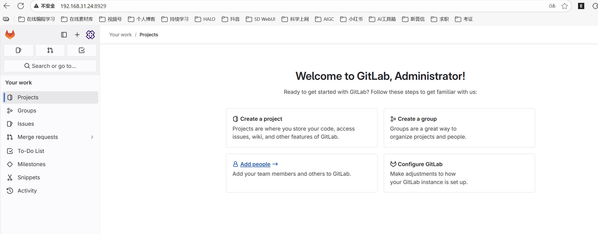
4、安装 Maven和JDK17
Maven下载地址：https://dlcdn.apache.org/maven/maven-3/3.8.9/binaries/apache-maven-3.8.9-bin.tar.gz
JDK17下载地址：https://download.oracle.com/java/17/archive/jdk-17_linux-x64_bin.tar.gz
上传部署包到目标服务器
# 放到root目录下
[root@jenkins-31-171 local]# ls -ltr /root/
总用量 184436
-rw-r--r-- 1 root root 180555480 8月 28 11:20 jdk-17_linux-x64_bin.tar.gz
-rw-r--r-- 1 root root 8296518 8月 28 11:23 apache-maven-3.8.9-bin.tar.gz
# 解压并改名
tar -zxvf apache-maven-3.8.9-bin.tar.gz -C /usr/local/
tar -zxvf jdk-17_linux-x64_bin.tar.gz -C /usr/local/
cd /usr/local/
mv jdk-17/ jdk
mv apache-maven-3.8.9/ maven
配置maven的仓库地址
# 配置文件
vim /usr/local/maven/conf/settings.xml
<mirror>
<id>aliyunmaven</id>
<mirrorOf>*</mirrorOf>
<name>阿里云公共仓库</name>
<url>https://maven.aliyun.com/repository/public</url>
</mirror>
配置Java JDK
# 配置文件
vim /usr/local/maven/conf/settings.xml
<profile>
<id>jdk17</id>
<activation>
<activeByDefault>true</activeByDefault>
<jdk>17</jdk>
</activation>
<properties>
<maven.compiler.source>17</maven.compiler.source>
<maven.compiler.target>17</maven.compiler.target>
<maven.compiler.compilerVersion>17</maven.compiler.compilerVersion>
</properties>
</profile>
</profiles>
<!-- activeProfiles
| List of profiles that are active for all builds.
|
<activeProfiles>
<activeProfile>alwaysActiveProfile</activeProfile>
<activeProfile>anotherAlwaysActiveProfile</activeProfile>
</activeProfiles>
-->
<activeProfiles>
<activeProfile>jdk17</activeProfile>
</activeProfiles>
5、安装Jenkins
- 登录官网Jenkins.io上下载对应的Jenkins镜像
docker pull jenkins/jenkins:2.462.3-lts
- 使用docker-compose部署Jenkins
mkdir -p /usr/local/docker/jenkins_docker
cd /usr/local/docker/jenkins_docker
vim docker-compose.yaml
services:
jenkins:
image: jenkins/jenkins:2.462.3-lts
container_name: jenkins
ports:
- 8080:8080
- 50000:50000
volumes:
- ./data/:/var/jenkins_home/
[root@jenkins-31-171 jenkins_docker]# docker-compose up -d
[+] Running 2/2
✔ Network jenkins_docker_default Created 0.0s
✔ Container jenkins Started 0.3s
[root@jenkins-31-171 jenkins_docker]# docker logs -f jenkins
INSTALL WARNING: User: missing rw permissions on JENKINS_HOME: /var/jenkins_home
touch: cannot touch '/var/jenkins_home/copy_reference_file.log': Permission denied
Can not write to /var/jenkins_home/copy_reference_file.log. Wrong volume permissions?
[root@jenkins-31-171 jenkins_docker]# ls -tlr
总用量 4
-rw-r--r-- 1 root root 185 8月 28 11:51 docker-compose.yaml
drwxr-xr-x 2 root root 6 8月 28 11:51 data
[root@jenkins-31-171 jenkins_docker]# chmod -R 777 data
[root@jenkins-31-171 jenkins_docker]# docker-compose up -d
[root@jenkins-31-171 jenkins_docker]# docker logs -f jenkins
INSTALL WARNING: User: missing rw permissions on JENKINS_HOME: /var/jenkins_home
touch: cannot touch '/var/jenkins_home/copy_reference_file.log': Permission denied
Can not write to /var/jenkins_home/copy_reference_file.log. Wrong volume permissions?
Running from: /usr/share/jenkins/jenkins.war
webroot: /var/jenkins_home/war
2025-08-28 03:52:19.721+0000 [id=1] INFO winstone.Logger#logInternal: Beginning extraction from war file
2025-08-28 03:52:20.611+0000 [id=1] WARNING o.e.j.s.handler.ContextHandler#setContextPath: Empty contextPath
2025-08-28 03:52:20.664+0000 [id=1] INFO org.eclipse.jetty.server.Server#doStart: jetty-10.0.24; built: 2024-08-26T17:58:21.070Z; git: d5384207795da96fad32db8ea8d26b69955bcc03; jvm 17.0.12+7
2025-08-28 03:52:21.016+0000 [id=1] INFO o.e.j.w.StandardDescriptorProcessor#visitServlet: NO JSP Support for /, did not find org.eclipse.jetty.jsp.JettyJspServlet
2025-08-28 03:52:21.050+0000 [id=1] INFO o.e.j.s.s.DefaultSessionIdManager#doStart: Session workerName=node0
2025-08-28 03:52:21.538+0000 [id=1] INFO hudson.WebAppMain#contextInitialized: Jenkins home directory: /var/jenkins_home found at: EnvVars.masterEnvVars.get("JENKINS_HOME")
2025-08-28 03:52:21.655+0000 [id=1] INFO o.e.j.s.handler.ContextHandler#doStart: Started w.@58860997{Jenkins v2.462.3,/,file:///var/jenkins_home/war/,AVAILABLE}{/var/jenkins_home/war}
2025-08-28 03:52:21.670+0000 [id=1] INFO o.e.j.server.AbstractConnector#doStart: Started ServerConnector@5c530d1e{HTTP/1.1, (http/1.1)}{0.0.0.0:8080}
2025-08-28 03:52:21.684+0000 [id=1] INFO org.eclipse.jetty.server.Server#doStart: Started Server@1c6804cd{STARTING}[10.0.24,sto=0] @2329ms
2025-08-28 03:52:21.686+0000 [id=26] INFO winstone.Logger#logInternal: Winstone Servlet Engine running: controlPort=disabled
2025-08-28 03:52:21.870+0000 [id=34] INFO jenkins.InitReactorRunner$1#onAttained: Started initialization
2025-08-28 03:52:21.888+0000 [id=35] INFO jenkins.InitReactorRunner$1#onAttained: Listed all plugins
2025-08-28 03:52:22.496+0000 [id=34] INFO jenkins.InitReactorRunner$1#onAttained: Prepared all plugins
2025-08-28 03:52:22.499+0000 [id=36] INFO jenkins.InitReactorRunner$1#onAttained: Started all plugins
2025-08-28 03:52:22.507+0000 [id=33] INFO jenkins.InitReactorRunner$1#onAttained: Augmented all extensions
2025-08-28 03:52:22.645+0000 [id=39] INFO jenkins.InitReactorRunner$1#onAttained: System config loaded
2025-08-28 03:52:22.645+0000 [id=39] INFO jenkins.InitReactorRunner$1#onAttained: System config adapted
2025-08-28 03:52:22.646+0000 [id=39] INFO jenkins.InitReactorRunner$1#onAttained: Loaded all jobs
2025-08-28 03:52:22.647+0000 [id=39] INFO jenkins.InitReactorRunner$1#onAttained: Configuration for all jobs updated
2025-08-28 03:52:22.675+0000 [id=52] INFO hudson.util.Retrier#start: Attempt #1 to do the action check updates server
2025-08-28 03:52:22.916+0000 [id=39] INFO jenkins.install.SetupWizard#init:
*************************************************************
*************************************************************
*************************************************************
Jenkins initial setup is required. An admin user has been created and a password generated.
Please use the following password to proceed to installation:
e0127ee5810548959b3b175c3fca7545
This may also be found at: /var/jenkins_home/secrets/initialAdminPassword
*************************************************************
*************************************************************
*************************************************************
2025-08-28 03:52:29.800+0000 [id=39] INFO jenkins.InitReactorRunner$1#onAttained: Completed initialization
2025-08-28 03:52:29.878+0000 [id=25] INFO hudson.lifecycle.Lifecycle#onReady: Jenkins is fully up and running
2025-08-28 03:52:31.681+0000 [id=52] INFO h.m.DownloadService$Downloadable#load: Obtained the updated data file for hudson.tasks.Maven.MavenInstaller
2025-08-28 03:52:31.682+0000 [id=52] INFO hudson.util.Retrier#start: Performed the action check updates server successfully at the attempt #1
- Jenkins密码在日志中
e0127ee5810548959b3b175c3fca7545
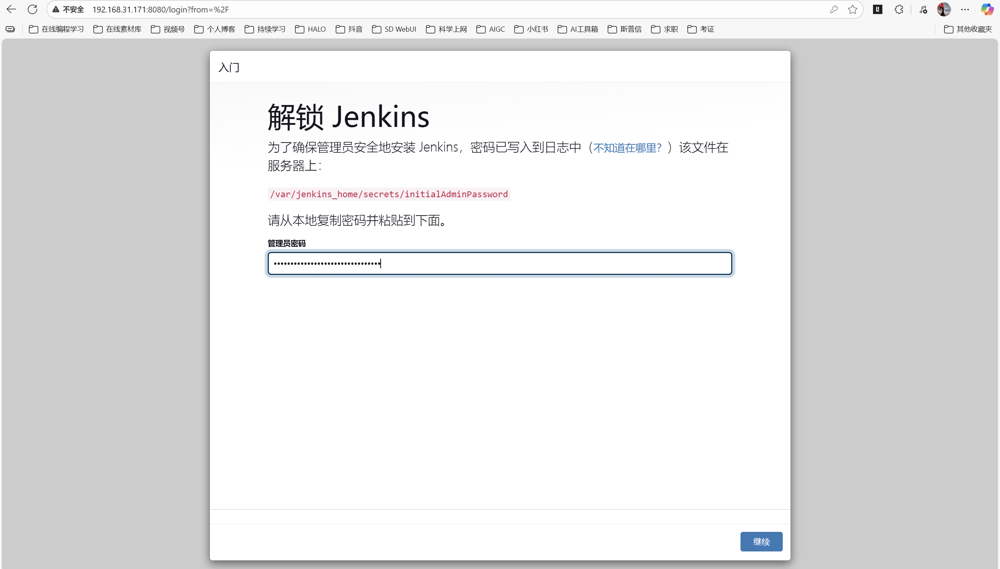
继续之后，选择-选择插件来安装-保持默认安装
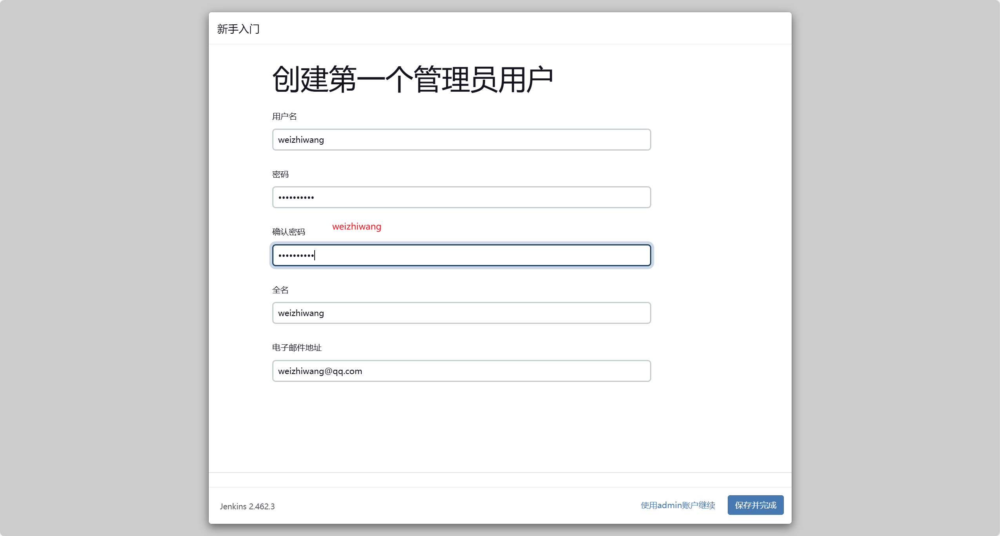
http://192.168.31.171:8080/
6、安装插件
- Git Parameter
- Publish Over SSH
7、在Jenkins中配置JDK和maven
mv /usr/local/jdk /usr/local/docker/jenkins_docker/data/
mv /usr/local/maven /usr/local/docker/jenkins_docker/data/
在Jenkins的全局配置中，手动添加安装的JDK，JAVA_HOME 填写容器内的路径
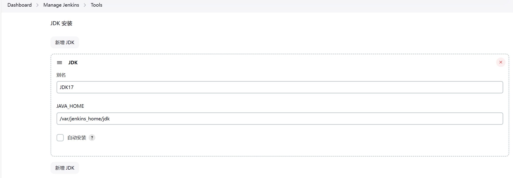
在Jenkins的全局配置中，手动添加安装的maven，MAVEN_HOME 填写容器内的路径
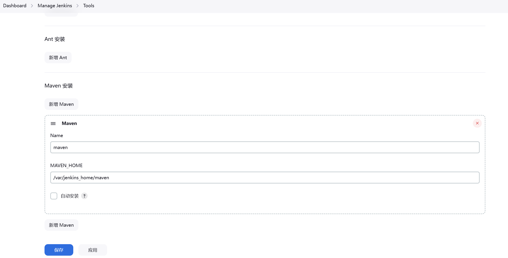
在系统配置中，配置远端接收项目的服务器，采用root 密码的方式连接。填写目录时，必须先创建
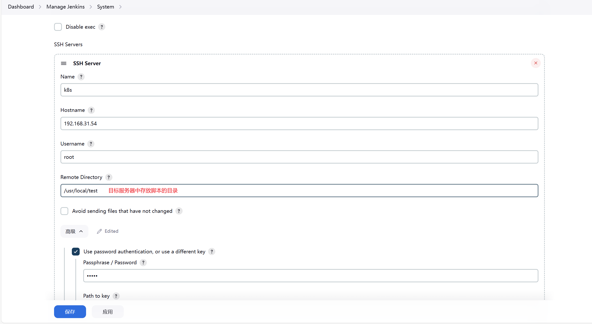
8、搭建本地环境
软件：vscode + maven + git
maven：https://dlcdn.apache.org/maven/maven-3/3.9.11/binaries/apache-maven-3.9.11-bin.zip
git：https://github.com/git-for-windows/git/releases/download/v2.51.0.windows.1/Git-2.51.0-64-bit.exe 傻瓜式安装
详情请参考：超详细的VsCode创建SpringBoot项目(图文并茂)_vscode创建spring boot项目-CSDN博客
9、使用Jenkins拉取gitlab代码
9.1 创建一个自由风格的项目，并且在源码管理中添加git
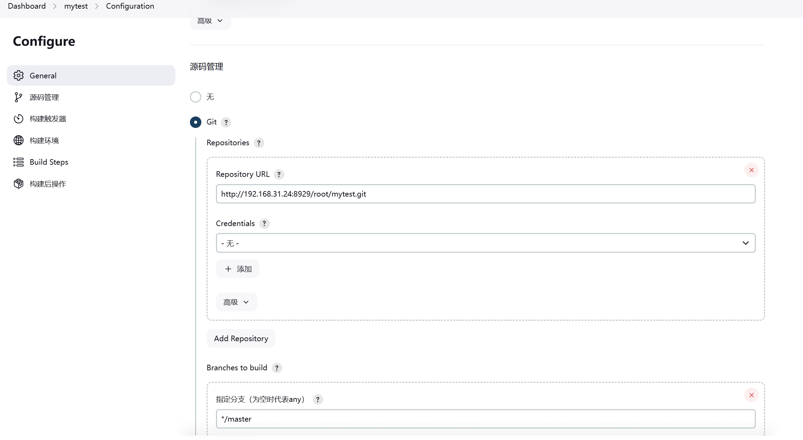
9.2 点击立即构建，把gitlab仓库的代码拉到本地
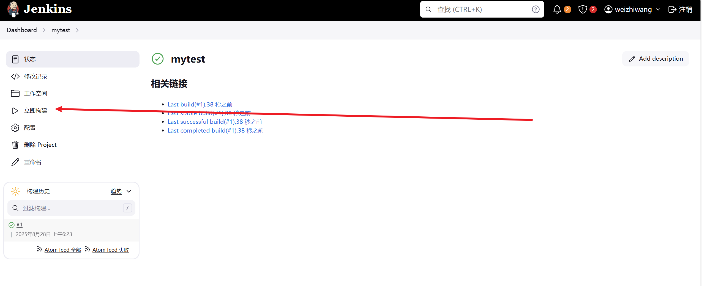
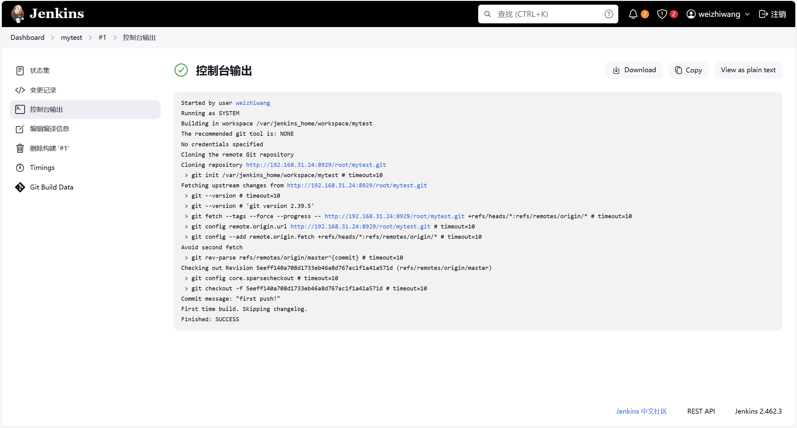
可以在Jenkins服务器的data/workspace中查看到
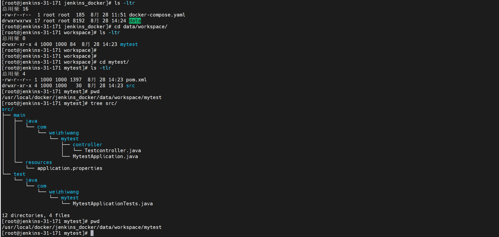
10、在拉取gitlab代码的同时，推送到目标服务器
10.1 添加构建操作
使用已安装的maven
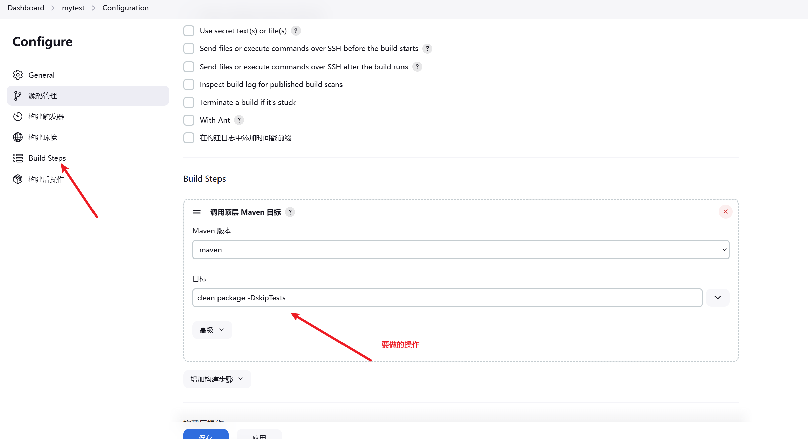
10.2 点击立即构建
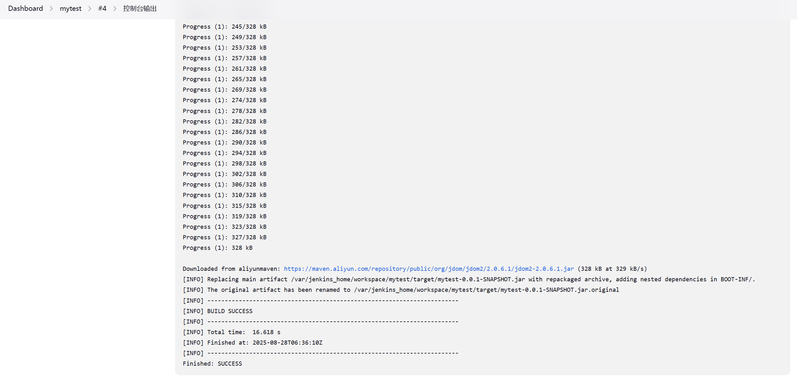
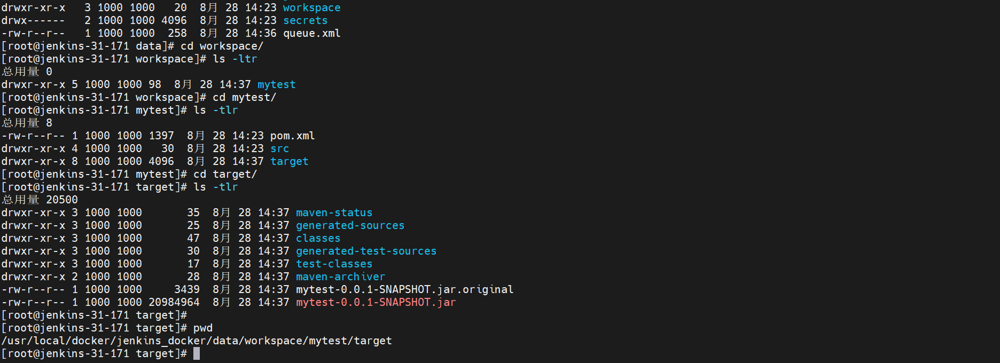
10.3 添加构建后操作-把jar包推送到k8s服务器
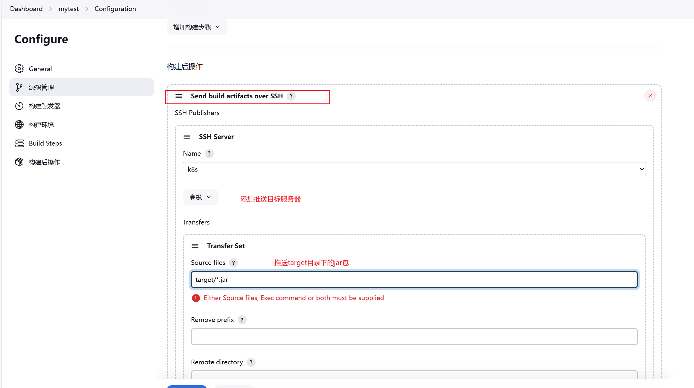
10.4 登录k8s服务器查看目标文件
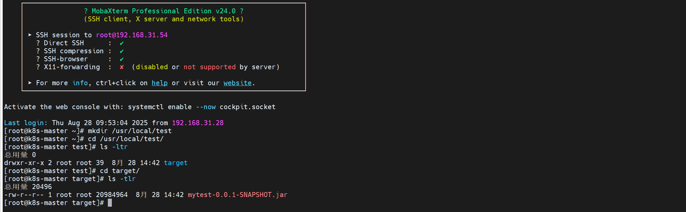
10.5 使用docker-compose的方式发布服务
# 在项目中创建docker目录，并创建Dockerfile文件和docker-compose.yaml文件
# Dockerfile
FROM eclipse-temurin:17-jdk-jammy
COPY mytest.jar /usr/local/
WORKDIR /usr/local
CMD java -jar mytest.jar
# docker-compose.yaml
services:
mytest:
build:
context: ./
dockerfile: Dockerfile
image: mytest:v1.0.0
container_name: mytest
ports:
- 8081:8080
Jenkins配置构建后操作
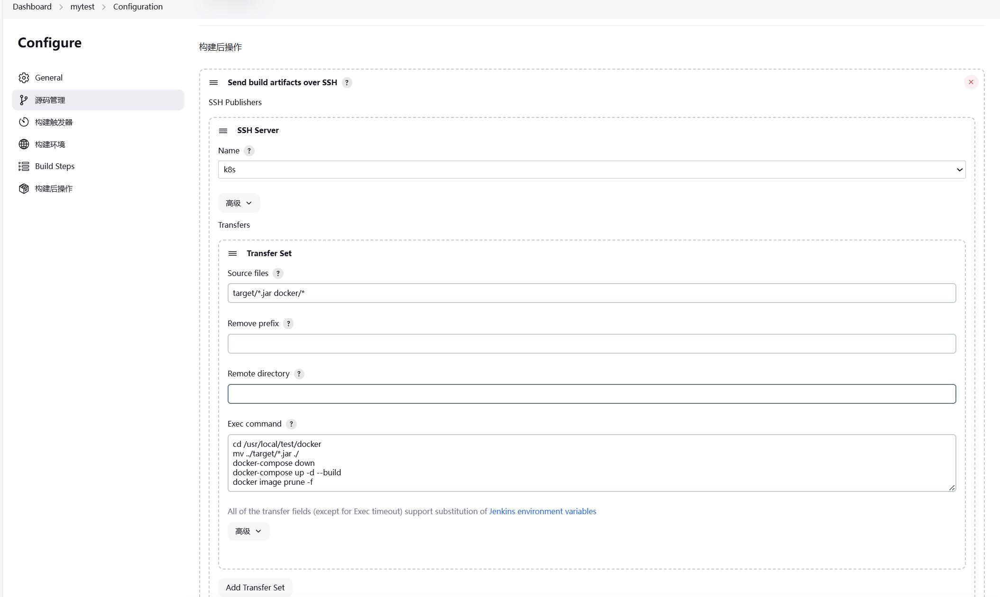
点击立即构建之后，浏览器访问服务
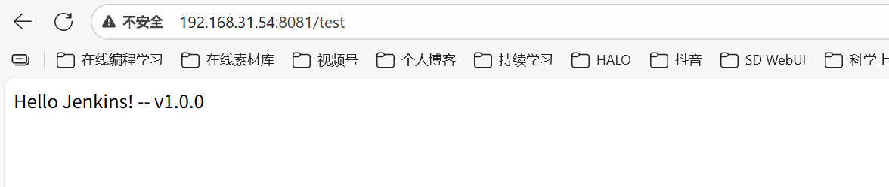
11、Jenkins基于参数构建
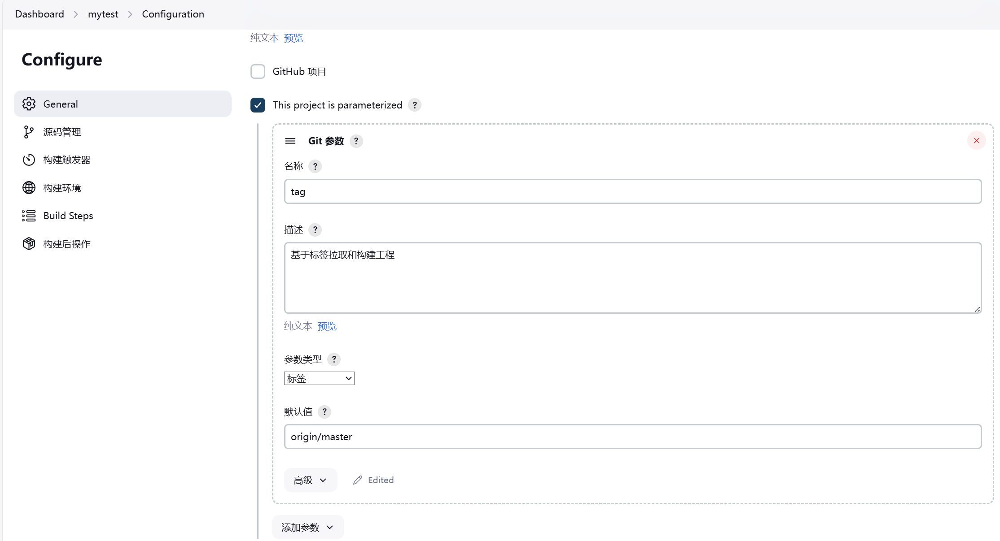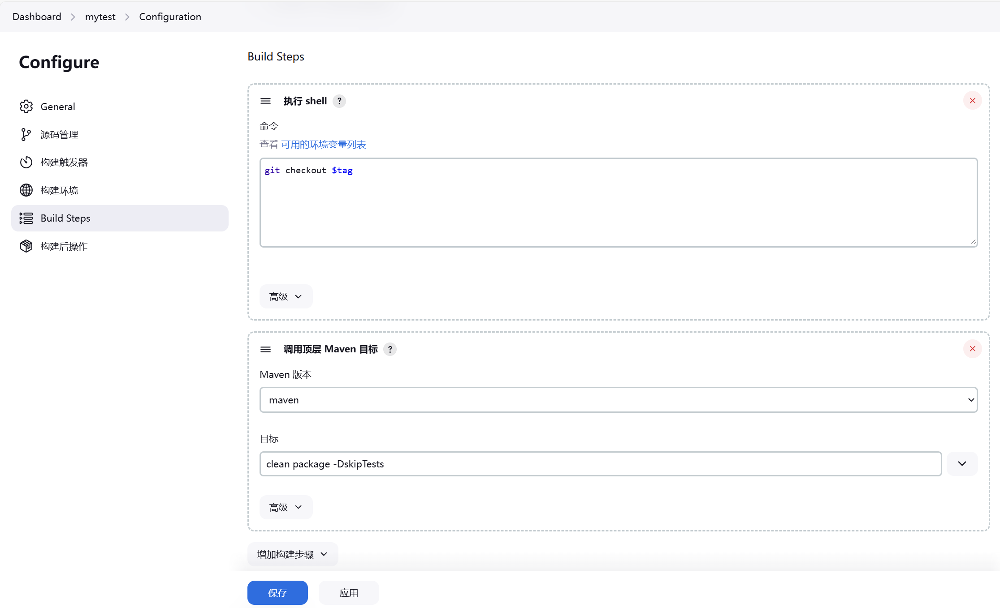
12、Jenkins容器内部使用Docker
# 找到docker.sock文件，把所属组改成root。给其他人添加读和写权限
cd /run/
chown root:root docker.sock
chmod o+rw docker.sock
[root@jenkins-31-171 jenkins_docker]# cat docker-compose.yaml
services:
jenkins:
image: jenkins/jenkins:2.462.3-lts
container_name: jenkins
ports:
- 8080:8080
- 50000:50000
volumes:
- ./data/:/var/jenkins_home/
- /run/docker.sock:/run/docker.sock
- /usr/bin/docker:/usr/bin/docker
- /etc/docker/daemon.json:/etc/docker/daemon.json